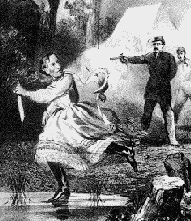

Jeff. Davis In Petticoats

Come all ye boys that's dressed in blue,
And I'll rehearse a ditty;
About Jeff. Davis whom you know
Once lived in Richmond city.
He thought he was the President,
Of half the Yankee nation;
And that his Rebel Government,
Would stand 'gainst all creation.
He raised a rebel army strong,
To carry on rebellion;
Which boys in blue have fought so long,
And whipped them by the million.
But Sherman went down to the sea
And up through Carolinas,
While Grant pitched into Gen. Lee
With bayonets bright and shiny.
Old Lee came out of Richmond town,
With his army in a hurry;
And on the railroad Jeff. went down,
In a devil of a flurry.
He put his Government on wheels,
And his specie in his pocket;
And with his brains all in his heels,
He shot off like a rocket.
One night while sleeping in his tent,
His wife was by his side, sir;
Says she, "Dear Jeff. your life's ill spent,
It cannot be denied, sir."
"Don't bother me, dear wife," Jeff. said,
For I am very weary;
"The Yanks will catch me yet I'm afraid,
My prospects look so scary."
"Hark! what is that? the Yankees come!"
Said Jeff. in awful flurry;
"Why thus invade my only home,
Wife! save me; will you hurry?"
With petticoats and crinoline,
And bonnet on his head, sir;
And cloak about him all so fine,
A woman was soon made, sir.
Says Mrs. Jeff "Let my mother go,
To get a pail of water;
Says Yank, "I'll try and let you know,
But do not think she oughter."
Says Yank, what heavy boots you wear,
My dear old Mrs. Davis;
Now let me tell you, Jeff! I fear;
You want to try to leave us.
Old Jeff. soon found it would not win,
His cake was soon all dough, sir;
And now we have old Jeffy in
A cell in Fort Monroe, sir.
He thinks of sour apple trees,
And neckties he is loathing,
And in his dreams no doubt he sees,
Himself in woman's clothing.
And whether Jeff. be hung or not
His shame could be no greater;
On earth he ne'er could find a spot
That would not shame the Traitor.
From: War Songs Poems and Odes by R.W. Burt
Peoria Illinois 1909